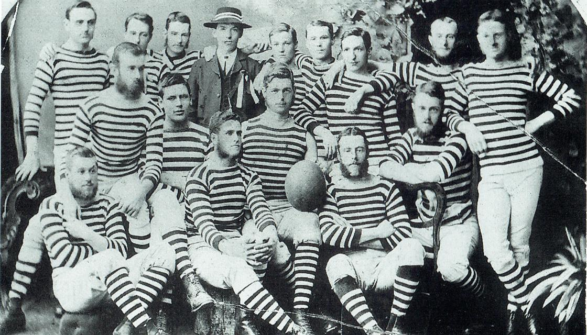
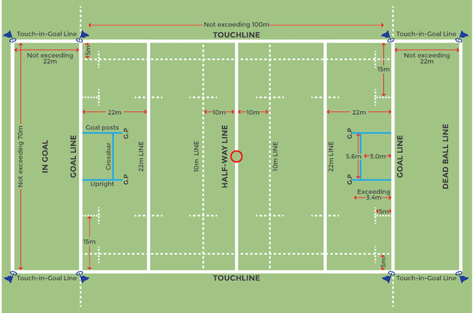

Rugby is a popular contact sport played between two teams, each consisting of fifteen players. The objective of the game is to score more points than the opposing team by carrying or kicking an oval-shaped ball across the opponent's try line or by kicking the ball over the opponent's crossbar. The game is known for its physicality and requires a combination of strength, speed, and tactical awareness.
Rugby is divided into two main types of gameplay: rugby union and rugby league. Rugby union is the more traditional form of rugby and is played in most countries around the world, while rugby league is more popular in Australia, New Zealand, and some parts of Europe. The rules and gameplay of the two forms of rugby differ slightly, with rugby league being generally considered a faster and more fluid game.
Rugby has many positions, each with its own specific set of responsibilities. The forwards are generally the larger and more powerful players and are responsible for winning possession of the ball and making short runs. The backs are generally the smaller and faster players and are responsible for running with the ball and scoring tries.
Rugby has a strong tradition of sportsmanship and respect, with players expected to adhere to a strict code of conduct both on and off the field. The sport has a rich culture and is often associated with traditions such as the Haka, a traditional Maori war dance performed by the New Zealand national team before each game.
Overall, rugby is a physically demanding and highly competitive sport that requires a combination of physical prowess, strategic thinking, and teamwork. It is enjoyed by millions of people around the world and continues to be a popular spectator sport at both the amateur and professional levels.
History

Rugby has a long and interesting history that dates back to the early 19th century in England. The game was first played by students at Rugby School, where it was known as "football" and involved carrying the ball in one's hands and running with it.
Over time, the game evolved and began to take on more structure and organization. In 1871, the Rugby Football Union (RFU) was formed in England to standardize the rules and regulations of the game. This led to the development of rugby union, which became the more traditional form of rugby.
Rugby continued to grow in popularity throughout the 20th century, with the sport being played in many countries around the world. The first Rugby World Cup was held in 1987, which further increased the sport's profile and popularity.
Throughout its history, rugby has been known for its physicality and toughness, as well as its strong traditions of sportsmanship and respect. The sport has also had a significant cultural impact, particularly in countries such as New Zealand and South Africa, where rugby is an important part of national identity.
Today, rugby continues to be a popular and exciting sport played by millions of people around the world, both at the amateur and professional levels.
Rugby Today
Today, rugby continues to be a popular and exciting sport played by millions of people around the world. The sport is played at both the amateur and professional levels, with many countries having their own domestic leagues and competitions.
At the international level, rugby is played by national teams in various tournaments and championships. The pinnacle of international rugby is the Rugby World Cup, which takes place every four years and features the top teams from around the world competing for the title of world champions.
In addition to the traditional forms of rugby, such as rugby union and rugby league, there are also other variations and adaptations of the sport. For example, sevens rugby is a faster-paced version of rugby union that is played with seven players on each team, and is a popular format for tournaments and competitions.
Off the field, rugby has a strong culture and community, with many players and fans upholding the values of sportsmanship, respect, and camaraderie. Rugby also has a significant impact on local communities, with many clubs and teams supporting charitable causes and social initiatives.
Overall, rugby remains a beloved and vibrant sport that continues to grow and evolve, both on and off the field.
How to Play

Rugby is a team sport played with two teams, each consisting of 15 players in rugby union or 13 players in rugby league. The objective of the game is to score more points than the opposing team. A rugby ball is oval-shaped and made of leather or synthetic materials. Points can be scored through tries, conversions, penalty kicks, or drop goals.
The game is played in two 40-minute halves with a break in between. Players can pass, kick, or carry the ball to advance it down the field, and can tackle and block opponents to prevent them from advancing.
Rugby has many rules and regulations governing player conduct and gameplay, including rules around tackling, scrums, lineouts, and rucks and mauls. The game has various positions that players can play, each with their own specific roles and responsibilities.
Playing rugby requires a combination of physical fitness, technical skill, and strategic thinking. With practice and dedication, players can develop their abilities and become strong contributors to their team.
Culture
Rugby has a rich and unique culture that is deeply rooted in sportsmanship, respect, and camaraderie. One of the defining characteristics of rugby culture is the emphasis on teamwork and collaboration. Unlike some sports where individual players may dominate the game, rugby places a premium on working together as a cohesive unit to achieve success.
Another important aspect of rugby culture is the idea of fair play and sportsmanship. Rugby players are expected to compete hard on the field, but to also show respect to their opponents and the officials who oversee the game. This can manifest in many ways, such as congratulating an opponent after a good play, helping an injured player off the field, or accepting the decisions of the referee without argument.
Rugby culture also values physical toughness and resilience. The sport is known for its physical demands, and players are expected to be tough and resilient in the face of challenges and adversity. This can be seen in the way that rugby players often play through injuries or push themselves to the limit during training and games.
Off the field, rugby has a strong social and community aspect. Many rugby clubs and teams organize events and social activities, such as team dinners or charity fundraisers, which help to build a sense of camaraderie and belonging among players and supporters.
Overall, rugby culture is characterized by a deep sense of respect, sportsmanship, and teamwork, as well as a commitment to physical toughness and resilience. This unique culture has helped to make rugby a beloved and enduring sport around the world.